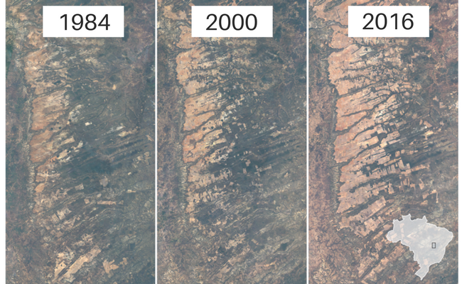

Deforestation affects the people and animals where trees are cut, as well as the wider world. Removing trees deprives the forest of portions of its canopy, which blocks the sun’s rays during the day and retains heat at night. That disruption leads to more extreme temperature swings that can be harmful to plants and animals even our planet.
image by Kuo, Gioetta